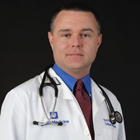

-

Dr. Eric Andrew Reyer
Professional Credentials:
- Doctor of Nursing Practice (DNP)
- Acute Care Nurse Practitioner (ACNP)
- Critical Care Clinical Nurse Specialist (CCNS)
- Advanced Practice Registered Nurse (APRN)
- Certification for Critical Care Nurse (CCRN)
- Certification for Emergency Nurse (CEN)
Current Positions:
- Lead Critical Care Nurse Practitioner, Duke University Health System- Raleigh, NC
- Founder, Reyer Medical Associates, LLC, Analytics, Consulting, and Education
- Public Speaker/Educator- Independent, ICU Medical, Zoll Medical
Past Positions:
- Emergency Services- Induced Hypothermia Coordinator/Preceptor/CNS/Critical Care-Nurse Practitioner, WakeMed Health & Hospitals
- Nurse Manager - Emergency Services, WakeMed Health & Hospitals
- Nurse Manager/Combat Nurse- General Surgery and PACU, Heidelberg Germany
- Travel/Agency RN- ER, ICU- Medical, surgical, trauma, cardio-thoracic, neuro, cardiac, neonatal
Professional Focus/Area of Expertise:
- SvO2/ScvO2 Monitoring and management
- Latex Allergies
- ScvO2-Transfusions and optimizing tissue oxygenation
- Hemodynamics-basic through advanced
- Sepsis- ICU and ER
- Blood Management- all areas of Healthcare
- Evidenced Based Practice
- Closed Infusion Systems
- Central Venous/Pulmonary Artery Cannulation
- Nurse Driven Protocols
Curriculum Vitae:
Biography:
Dr. Eric Reyer brings over 20 years of experience to his seminars and educational offerings, giving you a comprehensive view on healthcare while focusing on evidenced based practice. His goal is to engage you with an in-depth understanding of the subject matter while having you walk away entertained and motivated.
His experience is vast and includes: Critical Care-Medical, Surgical, Trauma, Cardio-thoracic, Cardiovascular, Neuro, and Neonatal. Dr. Reyer also has extensive experience in emergency medicine both in hospital and with critical care transport/flight. Being a veteran of the US Army, his strong administrative/management skills were further molded, carrying over into his civilian career.
Dr. Reyer holds a Doctorate from Duke University including a Master's degree and post Master's certificate. He is licensed as both an Acute Care Nurse Practitioner (ACNP) and a Critical Care Clinical Nurse Specialist (CCNS) while holding three undergraduate degrees. He presents extensively across the US on a variety of topics.
A Synopsis of Eric's Message(s):
"SvO2/ScVO2: A Vital Piece of the Hemodynamic Puzzle; It's Not Just for Sepsis"
Until the development of S(c)VO2 technology, there was not a simple means of measuring oxygen consumption in the critically ill patient. SpO2 offered only one half of the puzzle by giving a continuous reading of percentage of hemoglobin saturation in the artery. Central Venous Oximetry now allows us to get an overall picture of continuous oxygen delivery and tissue perfusion/oxygen consumption. This allows the bedside nurse to detect subtle changes in the needs of the ICU patient from decreased cardiac output to decreasing hemoglobin without having to rely on subjective findings or timely laboratory tests. Though ideal for severe sepsis patients, S(c)VO2 should also be utilized in any patient who develops shock (or potential to develop shock) such as trauma, GI bleed, MI, etc. This lecture will explore these concepts and give the bedside nurse new tools in managing their critical care patients through a simple technology.
"Are You Unknowingly Harming Patients Through Exposure to Latex?"
This lecture covers an introduction to latex allergies and how a patient is at risk each time they enter a hospital from hundreds of different sources. The complexity of the reactions and how to help prevent exposure is covered.
A Copy of Eric's Past Presentation(s):

-
Lisa Soltis
Professional Credentials:
- Advanced Practice Registered Nurse (APRN)
- Master of Science in Nursing (MSN)
- Certification for Progressive Care Nurses (PCCN)
- Certification for Critical Care Nurse - Cardiac Surgery (CCRN-CSC)
- Certification for Critical Care Clinical Nurse Specialists (CCNS)
- Fellowship in the American College of Critical Care Medicine (FCCM)
Current Positions:
- Critical Care Clinical Nurse Specialist, WakeMed
- Fellow of Critical Care Medicine, Society of Critical Care Medicine
- Critical Care Education Specialist, Med Ed/ Critical Care Seminars
Past Positions:
- Nurse Manager/Open Heart, Duke University Health System
- Staff Nurse, WakeMed
Professional Focus/Area of Expertise:
Sepsis, Blood Transfusions, Blood Conservation
Curriculum Vitae:
Biography:
Lisa brings over 17 years of critical care experience to her lectures. She has earned her BA from Western Michigan University, her BSN from the University of North Carolina-Charlotte, and her Master's Degree from Duke University School of Nursing as an Adult Critical Care Clinical Nurse Specialist. She is a member of the American Association of Critical Care Nurses, the National Association of Clinical Nurse Specialists, and the Society of Critical Care Medicine where she a Fellow of the American College of Critical Care Medicine, and serves as an elected member of the Advanced Practice Nursing Development workgroup. She is the past President of the North Carolina affiliate of the National Association of Clinical Nurse Specialists, and is a Board member of the Advanced Practice Continuing Education workgroup with AACN, as well as a member of the committee revising the CNS Scope and Standards of Practice. Her experience includes Trauma/Surgical Critical Care and over 13 years of Cardio-Thoracic Critical Care.
She currently works as the Cardiovascular/Critical Care Clinical Nurse Specialist for Wake Med Health and Hospitals in Raleigh, NC. She also lectures across the country on various topics related to critical care, including several certification review courses
A Synopsis of Lisa's Message(s):
"The Science Behind the New Sepsis Bundles"
Sepsis continues to be the leading cause of non-cardiac deaths in the ICU. Early recognition of SIRS and Sepsis is the key to improving patient outcomes. In this session we will review the new Surviving Sepsis Guidelines as well as the science and data behind these changes. We have a very small window to initiate the Surviving Sepsis Resuscitation Bundles, therefore Time is Tissue.
A Copy of Lisa's Past Presentation(s):